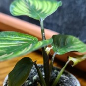
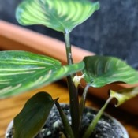

| Nom et photo | Exposition | Arrosage | Rempotage | Saisons |
|---|---|---|---|---|
| Calathea crocata |
Lumineuse sans soleil direct. Soleil d'hiver sans danger. | Modéré et régulier en laissant le substrat sécher un peu entre 2 arrosages. À besoin d'une bonne humidité ambiante. Adapter en hiver. | Terreau normal plantes d'intérieur éventuellement mélangé avec de la tourbe ou fibre de coco. Pot en plastique de taille moyenne. | Été: Intérieur et extérieur. Hiver: Intérieur ambiante ou dans une pièce fraîche. | Calathea 'freddie' |
Très lumineuse avec soleil direct. Été au soleil après acclimatation. | Modéré et régulier en laissant le substrat sécher entre 2 arrosages. À besoin d'une bonne humidité ambiante. Adapter en hiver. | Terreau normal plantes d'intérieur éventuellement mélangé avec de la tourbe ou fibre de coco. Pot en plastique de bonne taille. | Été: Intérieur et extérieur. Hiver: Intérieur ambiante ou dans une pièce pas trop fraîche. |
| Calathea orbifolia |
Très lumineuse avec soleil direct. Été au soleil après acclimatation. | Modéré et régulier en laissant le substrat sécher entre 2 arrosages. À besoin d'une bonne humidité ambiante. Adapter en hiver. | Terreau normal plantes d'intérieur éventuellement mélangé avec de la tourbe ou fibre de coco. Pot en plastique de bonne taille. | Été: Intérieur et extérieur. Hiver: Intérieur ambiante ou dans une pièce pas trop fraîche. |
| Calathea ornata 'beauty star'  |
Très lumineuse avec soleil direct. Été au soleil après acclimatation. | Modéré et régulier en laissant le substrat sécher entre 2 arrosages. À besoin d'une bonne humidité ambiante. Adapter en hiver. | Terreau normal plantes d'intérieur éventuellement mélangé avec de la tourbe ou fibre de coco. Pot en plastique de bonne taille. | Été: Intérieur et extérieur. Hiver: Intérieur ambiante ou dans une pièce pas trop fraîche. |